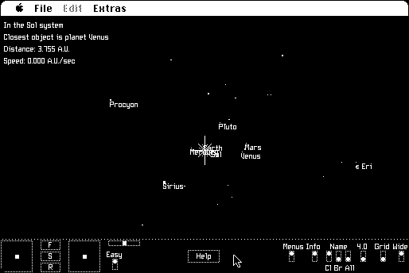

Download
orion-1.82.zip (49K) Orion 1.82 repackaged into a zipped hfs disk image and checksum file. The disk image can be mounted with Mini vMac.
orion-1.82.bin (90K) Orion 1.82 in the original format.
copyright: Robert P. Munafo
mod date: Nov 7, 1989
license: shareware
official url :
Orion, the Space Flight Simulator at MROB
A "Space Flight Simulator". A few simple controls allow moving around the planets and nearby stars.

If you find these downloads useful, please consider helping the Gryphel Project, which hosts them.
Here are the md5 checksums for the downloads, signed with Gryphel Key 5:
--------- GRY SIGNED TEXT --------- 86118a50827d2576f94cd536c4233bf1 orion-1.82.zip d91afa92802bc51f61c00a2fe3d359e5 orion-1.82.bin ------- BEGIN GRY SIGNATURE ------- Gry/4Xa8CFcUzxdN/AOH/dBow8FqAH6ISGvuE15Ig7ufslRqs/zgauaWJu8OL1k4 4Vby2bqzbuUACXLjQftPRfikDbZaklN83Hv3hHWMv6d95TQBKXzYvLv71xvawZm0 6si3OM1nIcJZawSoTY9pgzrL6VQqi97tMYl1cvyBVtBy/jhYxpZtmnDCxp/XEaiD -------- END GRY SIGNATURE --------